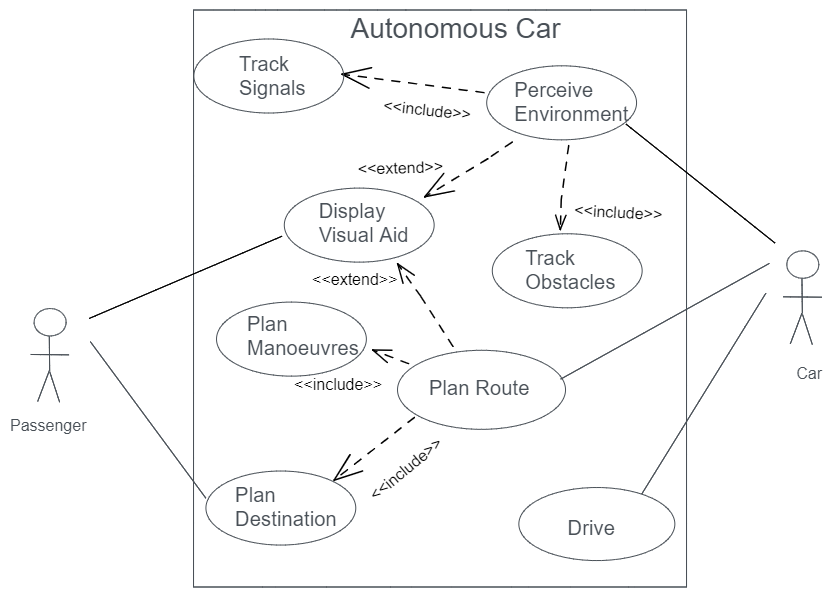

Requirements Analysis
Miscellaneous notes related to requirements analysis, drawing on course material and further reading:
Use Case Diagrams
- A use case is a functional requirement that an information system is expected to meet.
- A use case can be associated with particular categories of users, or actors.
- Relationships may exist between use cases such as generalizations, inclusions and extensions.
- Relationships among cases and actors can be modelled using a use case diagram.
Example
An example of a use case diagram for an autonomous car.
Pen Portraits
- Users are an essential requirement for the success of software.
- Groups of users are clustered together when shared descriptions have predictive value.
- A pen portrait is an informal description of a person or group of people.
Example
An example of a pen portrait for the users of autonomous car.

bg22514@essex.ac.uk